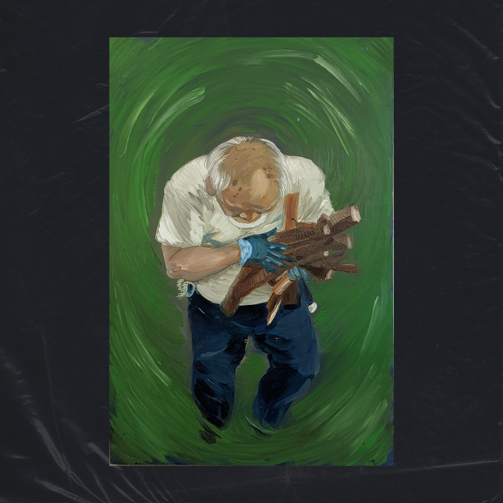
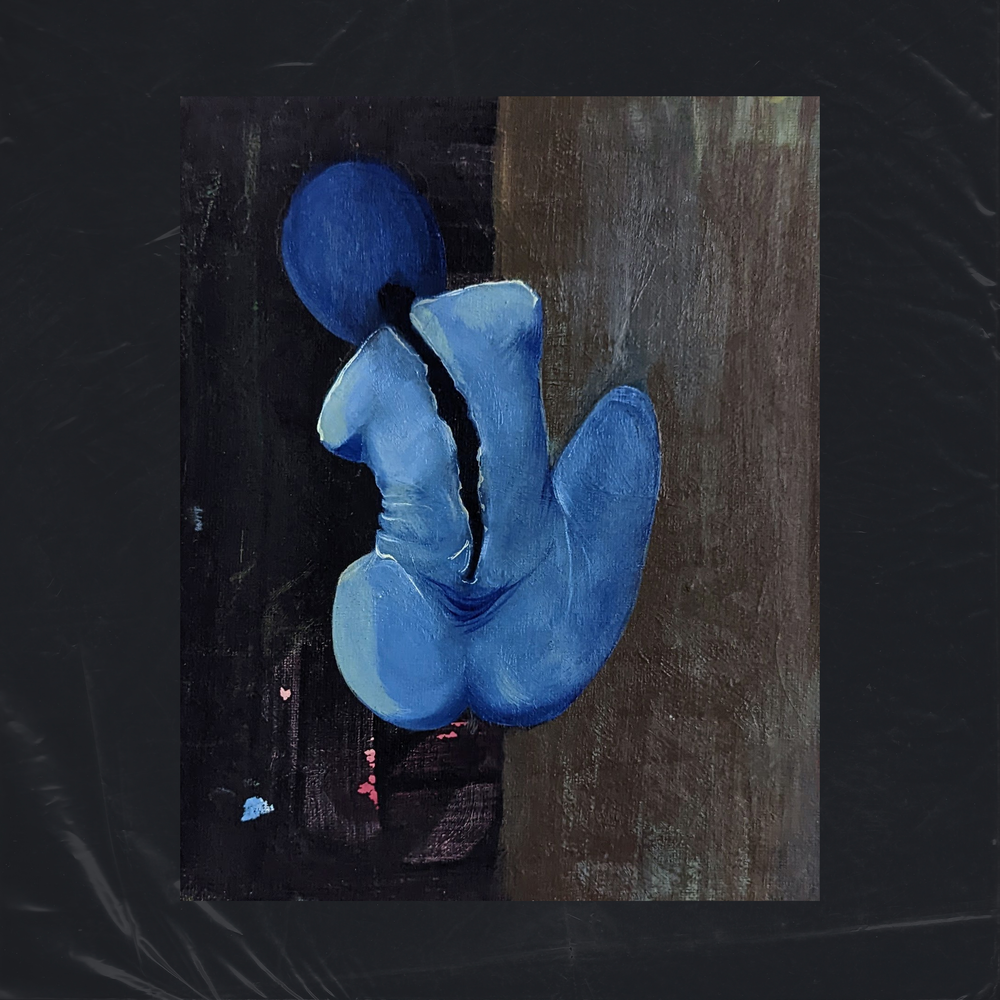
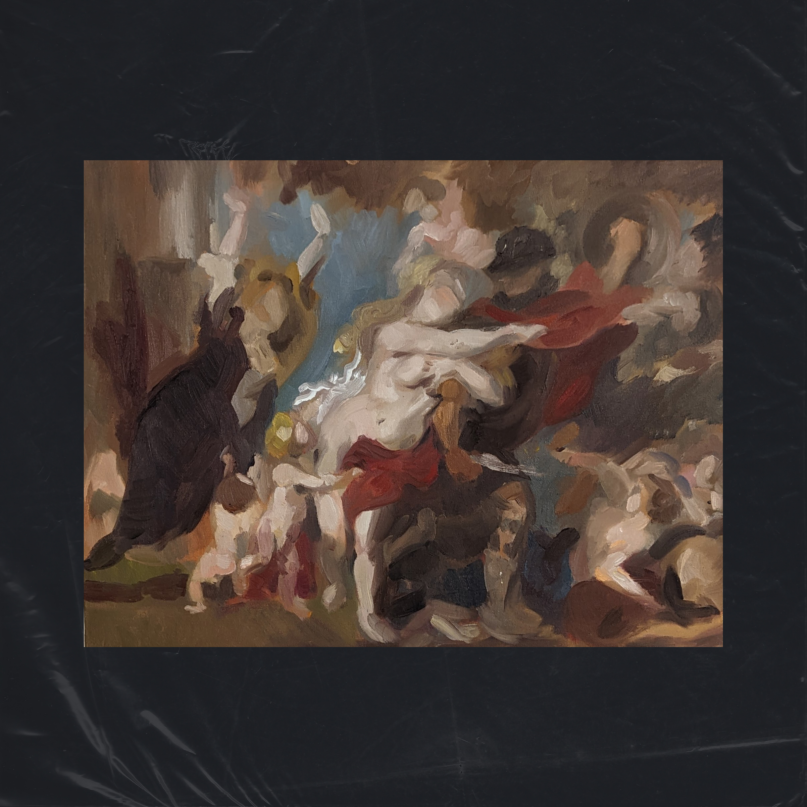
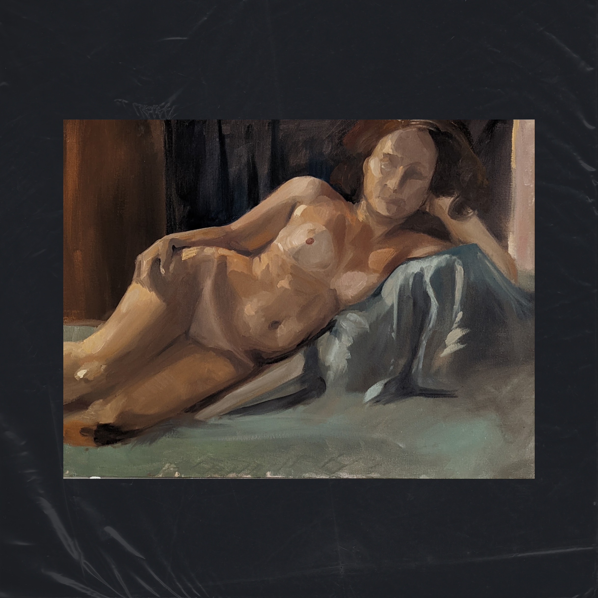

{kind=link}
{kind=link}

Tsuchiya // 2015
Portrait of Tsuchiya Anna, color inverted, surrounded with flowersAcrylic, Wood Panel
20" x 31"

Woman // 2015
A series of layered paintings building up texture, color, and shapeAcrylic, Oil, Stretched Canvas
24" x 28.5"

Oil, Wood Panel
20" x 31"
叔父ちゃん // 2015
Study of my grandfather clearing wood in Japanese countryside homeOil, Wood Panel
20" x 31"

Insatiable // 2015
Recreation of Goya's Saturn with San Francisco cityscapes and anthropomorphized broccoliOil, Stretched Canvas
24" x 30"

Oil, Canvas board
8" x 10"
Back Pain // 2017
Exploration of chronic painOil, Canvas board
8" x 10"

Oil, Canvas board
18" x 24.5"
Baroque // 2015
Recreation of baroque paintingOil, Canvas board
18" x 24.5"

Happy Trees
Recreation of Bob Ross landscapeAcrylic, Canvas

Contemplation // 2018
Oil, Canvas24" x 29"

Cranes in the Sky // 2011
Flower-infused birds in flightWater-Soluble Oils, Origami Paper, Canvas
18" x 24"

Fashion magazine // 2010
PortraitAcrylic, Archival Paper
8" x 10"

Oil, Canvas board
18" x 24.5"
Nude 02 // 2015
Life Drawing StudyOil, Canvas board
18" x 24.5"